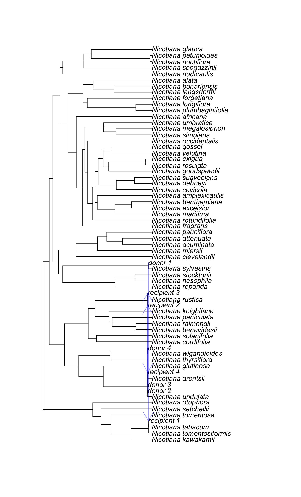
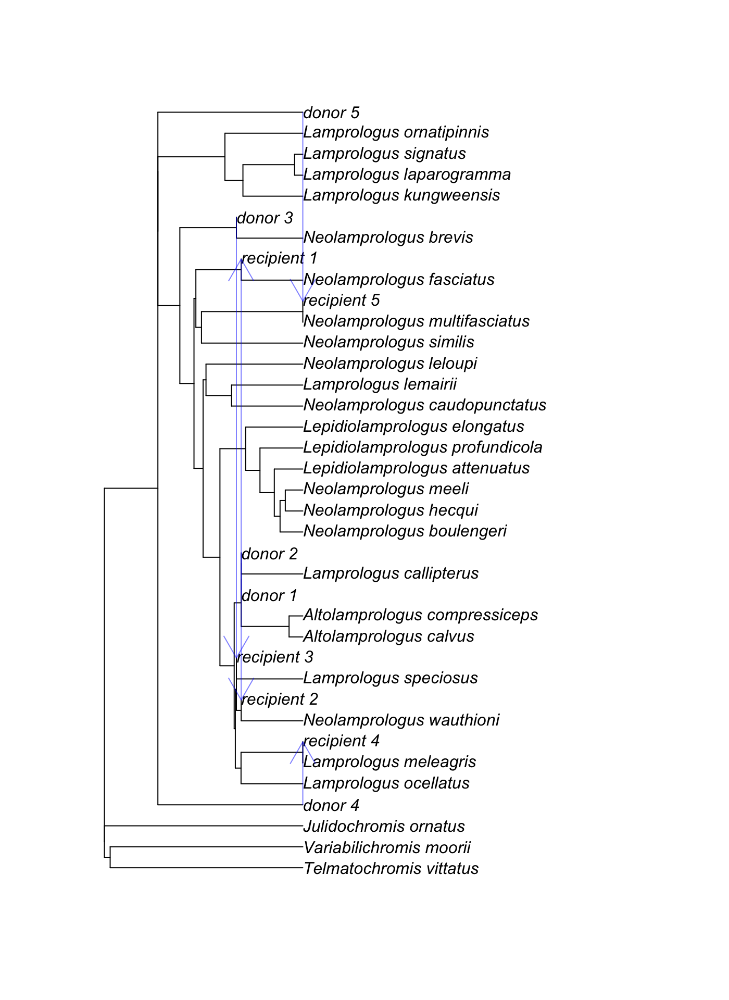
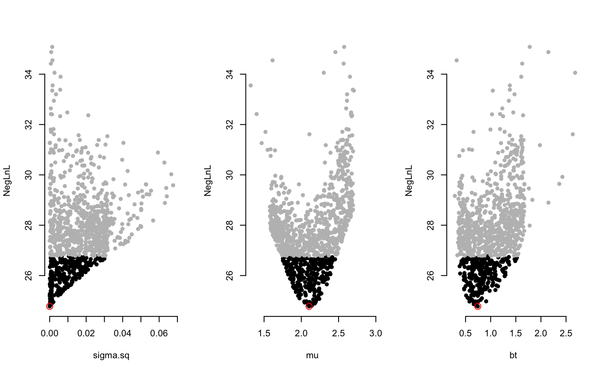

While we often think of evolution as happening on a bifurcating evolutionary tree, in reality gene flow between distinct lineages is common. Until recently, there was little one could do about it. Our BMhyb package allows for fitting models of evolution to phylogenetic networks (also see Bastide et al. 2018 for a similar approach, which is implemented in the Julia package PhyloNetworks). We have several models implemented that are restrictions of a general model. In the most general case, we assume Brownian motion of a trait on a phylogenetic network. Sometimes, lineages come together to form hybrids. We typically assume the hybrids receive equal input from both parents, but this can be altered. At the hybridization event, several things can happen: there could be increased variation (due to transgressive segregation, as in sunflowers) and/or there can be a shift in mean (as in ligers and tigons).
Installation
You can install BMhyb from github with:
Input for the program is a phylogeny, trait data (currently just univariate), and a data.frame containing flow information. This tells the software where gene flow happened between lineages. This gene flow can appear to go forward in time due to flow to unsampled lineages before later hybridization, so one must specify both the time (height from root) of the start of the divergence of the hybridization event and the time at which the event completed (note, though, that it considers it as a single event, not ongoing gene flow through all this time). Here is a sample network for tobacco and relatives, after Chase et al. 2003.

And here is one for cichlids, after Kobmuller et al. 2007

Besides the univariate trait data, another kind of data that can be useful is what is commonly called “measurement error.” This could mean actual measurement error: my ruler has markings every millimeter, so I have trouble figuring out if this beetle is 10.2 or 10.3 mm long. But it basically stands for all the variation that is present within a species. Brownian motion and related models are basically fitting data to a multivariate normal distribution. Covariances between species under basic models come from evolution on the same branches; variation of a tip value comes from both evolution along branches (Brownian motion “wiggling”) and other sources of variation that don’t stem from that evolutionary process: imprecision in the measurement, but also intraspecific variation (the processes model the “average” value for a species, but we know that intraspecific variation can be substantial and important) and other sources of noise. Most comparative methods are done assuming this uncertainty is zero: a single individual perfectly represents the mean value for its species. This forces the model to deal with any actual variation by forcing it to have happened on evolutionary branches, increasing the inferred rate of evolution (and also making the process look more like an Ornstein-Uhlenbeck one, assuming the true process is Brownian motion). By default, BMhyb instead tries to estimate this measurement error (the SE parameter, below) though this is hard to do well. Better is inputing actual uncertainty from estimates in the data: this could be done by measuring multiple individuals in some or all species or even approaches as crude as saying that one expects 10% uncertainty on each trait value.
Once you have your data, tree, and flow, you can run analyses using the BMhyb() function. The free parameters one can use are:
-
sigma.sq= sigma squared, the basic rate of Brownian motion of traits. -
mu= state at the root of the tree -
SE= standard error of the measurements (see the paragraph above) -
bt= beta, the expected change in state mean in hybridization events. Beta=1 means no expected change, beta=2 means an expected doubling in size, beta=0.5 means an expected halving in size, and so forth. Think of “hybrid vigor” and plant height -
vh= extra variance in trait value as a result of being formed through hybridization: an extra burst in variation
Passing in a vector of the free parameters you want will have the program optimize those; otherwise, it will use default values.
Uncertainty is often substantial. Akaike weights are an estimate in the uncertainty in which model is best under the Akaike Information Criterion and are given by default. Parameter estimates are also uncertain. Fast ways to estimate the uncertainty involve looking at the curvature of the likelihood surface. Other approaches vary a single parameter at a time while holding the others at their maximum likelihood estimates and measuring the response. This can miss ridges: areas where one can vary one parameter at a time and quickly decline in value, but where one could vary both with little effect (for example, imagine looking at the plot of x+y-10 and seeing where this was close to zero: if y=5, then x has to stay near 5 if we do not want the total to be far from 0, but if we allow both to vary, we can have an infinite array of values). To detect this, we vary all the points in an adaptive way to feel our way around an island of good likelihood to get estimates. Plots of this show points within a certain region (following Edwards, a ∆lnL of 2 is taken as the region) and points sampled outside.
Here is a sample run. It generates BMhybResult class object. Simply plotting this object calls a dedicated function.
#> [1] "Now starting analysis"
#> [1] "Starting with initial values"
#> sigma.sq mu bt
#> 4.992629e-187 2.157905e+00 1.000000e+00
#> step negloglik sigma.sq mu bt
#> 1.000000e+00 2.507867e+01 1.329036e-04 2.146213e+00 8.993696e-01
#> [1] "New improvement found, resetting step counter"
#> step negloglik sigma.sq mu bt
#> 2.000000000 24.787656185 0.000153596 2.100998006 0.733782545
#> step negloglik sigma.sq mu bt
#> 3.000000000 24.787656185 0.000153596 2.100998006 0.733782545
#> step negloglik sigma.sq mu bt
#> 4.000000000 24.787656185 0.000153596 2.100998006 0.733782545
#> [1] "New improvement found, resetting step counter"
#> step negloglik sigma.sq mu bt
#> 5.000000e+00 2.477650e+01 1.120235e-05 2.104338e+00 7.436673e-01
#> step negloglik sigma.sq mu bt
#> 6.000000e+00 2.477650e+01 1.120235e-05 2.104338e+00 7.436673e-01
#> step negloglik sigma.sq mu bt
#> 7.000000e+00 2.477650e+01 1.120235e-05 2.104338e+00 7.436673e-01
#> step negloglik sigma.sq mu bt
#> 8.000000e+00 2.477650e+01 1.120235e-05 2.104338e+00 7.436673e-01
#> step negloglik sigma.sq mu bt
#> 9.000000e+00 2.477650e+01 1.120235e-05 2.104338e+00 7.436673e-01
#> step negloglik sigma.sq mu bt
#> 1.000000e+01 2.477650e+01 1.120235e-05 2.104338e+00 7.436673e-01
#> step negloglik sigma.sq mu bt
#> 1.100000e+01 2.477650e+01 1.120235e-05 2.104338e+00 7.436673e-01
#> step negloglik sigma.sq mu bt
#> 1.200000e+01 2.477650e+01 1.120235e-05 2.104338e+00 7.436673e-01
#> step negloglik sigma.sq mu bt
#> 1.300000e+01 2.477650e+01 1.120235e-05 2.104338e+00 7.436673e-01
#> step negloglik sigma.sq mu bt
#> 1.400000e+01 2.477650e+01 1.120235e-05 2.104338e+00 7.436673e-01
#> step negloglik sigma.sq mu bt
#> 1.500000e+01 2.477650e+01 1.120235e-05 2.104338e+00 7.436673e-01
#> [1] "100 of 1000 done"
#> [1] "200 of 1000 done"
#> [1] "300 of 1000 done"
#> [1] "400 of 1000 done"
#> [1] "500 of 1000 done"
#> [1] "600 of 1000 done"
#> [1] "700 of 1000 done"
#> [1] "800 of 1000 done"
#> [1] "900 of 1000 done"
#> [1] "1000 of 1000 done"
One common issue experienced in optimizing are problems with matrix condition – basically, internally the algorithm tries to invert a matrix, but for some combinations of networks and parameter values, numerically the matrix cannot be inverted (see Wikipedia if you’re curious about the details. Note we accept pull requests to improve the code). There are approaches to dealing with this, but they often work by increasing the values on the diagonals of the variance covariance matrix – which biologically means artificially creating more “measurement error” in the model. We have various approaches to adjusting poorly conditioned matrices in BMhyb: most are turned off by default, and the one we do use we add a penalty to likelihood results that do use this. Make sure to look at your likelihoods to see if they seem reasonable, and in general poke around to make sure you believe the results the program gives you (this is good advice in general).